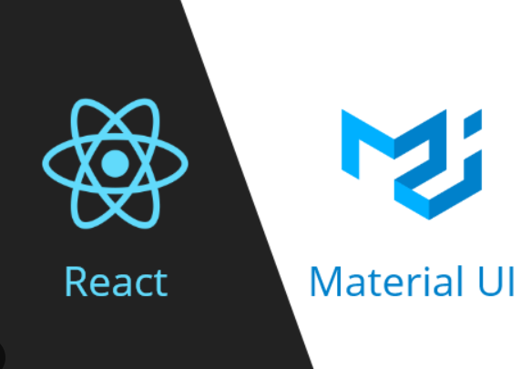

Le développement de l’interface utilisateur a débuté par une phase de maquettage avec Figma, afin de concevoir une interface moderne respectant la charte graphique du projet. J’ai adapté les écrans existants à la nouvelle plateforme, en collaboration avec l’équipe.
Front-End
Le Front-End a été développé avec React.js, en combinant des composants réutilisables fournis par Material-UI (MUI). J’ai utilisé la version payante avec personnalisation complète (SoftMUI) pour créer des composants interactifs : boutons, formulaires, listes déroulantes, etc.
Le useState et useEffect ont été utilisés pour gérer les interactions et l’état local. Pour l’état global, j’ai opté pour MobX, qui centralise les données comme la sélection de dates ou de partenaires.

L’espace "manifestation" est divisé en modules : création, édition, listing et options (autorisations, matériel). Chaque section est gérée dans des modals avec navigation entre les étapes (état, dates, partenaires, planning).
Les services React permettent d’appeler dynamiquement l’API backend selon les routes définies, tout en assurant la cohérence des données entre les composants.
Technologies utilisées
Librairies : React.js, Material-UI (SoftMUI)
Gestion d’état : MobX
API : Appels via services personnalisés (axios)
Maquettes : Figma
Tests & débogage : Chrome DevTools, console.log, inspecteur